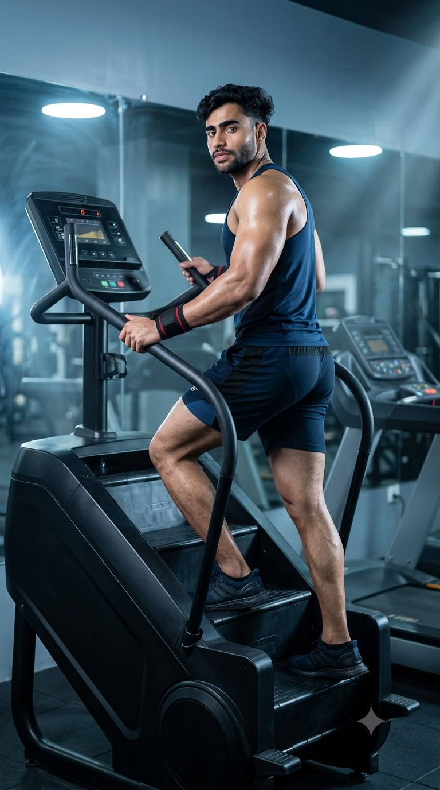

Primary Muscles
Glutes & Legs
Strengthen Your Lower Body, Burn Calories & Improve Cardiovascular Endurance
The Stair Climber is one of the most effective cardio machines for improving cardiovascular fitness while strengthening the lower body. By simulating continuous stair climbing, it targets the quadriceps, glutes, hamstrings, calves, and core, helping build muscular endurance and increase calorie expenditure. Whether your goal is fat loss, stronger legs, better stamina, or improved athletic performance, the Stair Climber delivers a challenging, low-impact workout suitable for beginners and advanced fitness enthusiasts alike.

Glutes & Legs
Stair Climber Machine
Beginner to Intermediate
Cardio Machine Exercise
Discover the primary and supporting muscles activated during the Stair Climber exercise. This cardio machine closely mimics the motion of climbing stairs, providing an excellent lower-body workout while improving cardiovascular endurance, muscular stamina, balance, and overall functional fitness.
The glutes generate powerful hip extension, the quadriceps straighten the knees during each step, and the calves provide ankle stability and push-off, making them the primary muscles responsible for continuous stair-climbing movement.
The hamstrings assist hip extension and knee control, while the hip flexors lift each leg onto the next step, contributing to smooth, efficient, and coordinated climbing mechanics.
The abdominal muscles stabilize the torso, maintain balance, and reduce unnecessary upper-body movement, allowing efficient force transfer throughout each climbing stride.
The spinal erectors help maintain an upright posture, while smaller stabilizing muscles around the hips, ankles, and knees improve balance, coordination, and movement efficiency throughout the workout.
Discover how the Stair Climber improves cardiovascular fitness, strengthens the lower body, burns calories, increases muscular endurance, enhances balance, and supports weight management through a challenging yet low-impact cardio workout.
Continuous stair climbing elevates your heart rate, strengthens the heart and lungs, improves circulation, and increases aerobic capacity for better overall cardiovascular health.
Every step activates the glutes, quadriceps, hamstrings, and calves, helping develop lower-body strength, muscular endurance, and functional movement for daily activities and sports.
The Stair Climber combines resistance with cardiovascular exercise, making it highly effective for increasing calorie expenditure, promoting fat loss, and supporting healthy weight management.
Regular Stair Climber workouts improve muscular endurance and cardiovascular stamina, allowing you to sustain physical activity longer with less fatigue.
Compared with high-impact running, the Stair Climber places less stress on the joints while still delivering an intense workout that challenges both the cardiovascular system and lower-body muscles.
The repetitive stepping motion improves coordination, balance, and lower-body stability, making everyday tasks such as climbing stairs and hiking easier while supporting better athletic performance.
Follow these step-by-step instructions to use the Stair Climber with proper technique. Focus on maintaining an upright posture, controlled stepping rhythm, light hand support, and steady breathing to maximize lower-body activation, improve endurance, and reduce the risk of injury.
Step onto the machine carefully using the side rails if needed. Select a comfortable resistance or stepping speed, then begin climbing once the pedals move smoothly beneath your feet.
Start slowly to become comfortable with the stepping rhythm before increasing intensity.
Stand tall with your chest up, shoulders relaxed, and core engaged. Look straight ahead while keeping your spine neutral, avoiding excessive leaning on the hand rails.
Lightly touch the rails only for balance—not to support your body weight.
Place your entire foot on each pedal and push through your heel as you climb. Use smooth, controlled steps instead of quick, shallow movements to maximize glute and leg activation.
Avoid standing on your toes, as this reduces glute engagement and increases calf fatigue.
Continue climbing at a consistent pace while breathing rhythmically. Increase the resistance or stepping speed gradually without sacrificing posture or step quality.
Focus on smooth, continuous movement instead of rushing through each step.
Gradually reduce the stepping speed until your heart rate begins to recover. Allow the pedals to stop completely before stepping off the machine carefully.
Spend 2–5 minutes cooling down to promote recovery and help prevent dizziness after intense cardio.
Avoid these common Stair Climber mistakes to maximize lower-body muscle activation, improve cardiovascular endurance, burn more calories, and reduce unnecessary stress on your knees, hips, and lower back. Proper technique helps you train safely while getting the most out of every workout.
Supporting your body weight with the handrails reduces glute and leg activation, lowers calorie expenditure, and encourages poor posture.
Stand upright and use the handrails only lightly for balance rather than body support.
Tiny, incomplete steps limit your range of motion and reduce activation of the glutes, quadriceps, and hamstrings.
Place your entire foot on each pedal and complete every step with smooth, controlled movement.
Looking at your feet disrupts spinal alignment, reduces balance, and places unnecessary strain on the neck and upper back.
Keep your head up, eyes forward, chest lifted, and maintain a neutral spine throughout the workout.
Raising the stepping speed or resistance before mastering proper technique can lead to fatigue, poor movement quality, and a greater risk of injury.
Increase intensity gradually while maintaining proper posture, full-foot contact, and a steady climbing rhythm.
Follow these expert coaching tips to improve your Stair Climber technique, maximize lower-body muscle activation, maintain proper posture, and make every workout safer, more efficient, and more effective for building endurance and burning calories.
Keep your chest up, shoulders relaxed, and core engaged. An upright posture improves balance, breathing, and lower- body muscle activation while reducing stress on the lower back.
Stand tall, don't lean.
Place your whole foot on each pedal and push through your heel during every step. This increases glute engagement, improves stability, and distributes force more evenly.
Full foot, strong push.
Avoid supporting your body weight with the handrails. Keeping your hands light allows your legs and core to do the work, increasing both muscle activation and calorie burn.
Light grip, active legs.
Increase your stepping speed or resistance gradually while maintaining proper technique. Consistent progression builds endurance, strengthens the lower body, and helps prevent unnecessary fatigue or injury.
Good form before more intensity.
Progress from comfortable stepping to advanced Stair Climber workouts by gradually improving your technique, workout duration, resistance, and climbing intensity. A structured progression helps build lower-body strength, cardiovascular endurance, and long-term fitness while minimizing injury risk.
Learn correct posture, full-foot placement, controlled stepping, and proper balance before increasing your workout intensity or resistance.
Stepping mechanics, posture, balance, and coordination.
Gradually extend your workout time while maintaining a steady climbing rhythm to improve cardiovascular endurance, muscular stamina, and calorie expenditure.
Endurance, consistency, and aerobic conditioning.
Progress by increasing the stepping speed or resistance while maintaining proper posture, full-foot contact, and smooth, controlled movement throughout every workout.
Lower-body strength, endurance, and calorie burn.
Challenge yourself with interval training, higher resistance levels, or longer climbing sessions to maximize cardiovascular fitness, muscular endurance, lower-body strength, and overall athletic performance.
Maximum conditioning, leg power, stamina, and heart-lung fitness.
Find answers to the most common questions about the Stair Climber, including muscles worked, calorie burn, weight-loss benefits, workout duration, beginner recommendations, and how to use the machine safely to improve cardiovascular fitness and lower-body strength.
The Stair Climber primarily targets the glutes, quadriceps, hamstrings, and calves while also engaging the core, hip flexors, and spinal erectors to maintain balance, posture, and efficient stepping mechanics.
Yes. The Stair Climber is beginner-friendly when used at a comfortable pace. Beginners should focus on proper posture, full-foot placement, and short sessions before gradually increasing workout duration or resistance.
Yes. The Stair Climber burns a significant number of calories while strengthening the lower body. Combined with a balanced diet and consistent exercise routine, it can be an effective tool for fat loss and weight management.
Beginners can start with 10 to 20 minutes per session, while intermediate and advanced users may train for 20 to 45 minutes depending on their fitness level, goals, and workout intensity.
Use the handrails only lightly for balance when necessary. Avoid leaning on them, as doing so reduces lower-body muscle activation, decreases calorie burn, and encourages poor posture.
Most people can use the Stair Climber three to five times per week depending on their fitness goals and recovery capacity. Include lower-intensity sessions or rest days to support recovery and long-term progress.
Build stronger legs, improve cardiovascular endurance, and increase calorie burn by combining the Stair Climber with these complementary cardio and lower-body exercises. Together, they create a balanced workout program for strength, endurance, and overall fitness.
Continue building your endurance, burning calories, and improving cardiovascular health with our complete collection of cardio exercise guides. Learn proper technique, muscles worked, training tips, common mistakes, and progression strategies for every fitness level.